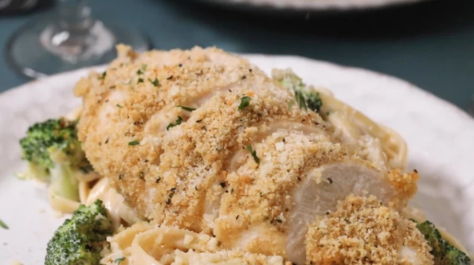

Baked Garlic Parmesan Chicken

A Delicious Baked Garlic Parmesan Chicken
Breaded chicken breasts flavored with garlic and Parmesan cheese are baked
until golden and crispy for the easiest chicken dish ever. Serve with a salad and
pasta for a quick, scrumptious dinner.
Ingredients
- 2 tablespoons olive oil
- 1 clove garlic, minced
- 1 cup dry bread crumbs
- ⅔ cup grated Parmesan cheese
- 1 teaspoon dried basil leaves
- ¼ teaspoon ground black pepper
- 6 skinless, boneless chicken breast halves
Directions
Step 1
- Preheat oven to 350 degrees F (175 degrees C).
- Lightly grease a 9x13 inch baking dish
Step 2
- In a bowl, blend the olive oil and garlic.
- In a separate bowl, mix the bread crumbs, Parmesan cheese, basi, and pepper.
- Dip each chicken breast in the oil mixture, then in the bread crumb mixture.
- Arrange the coated chicken breasts in the prepared baking dish, and top with any remaining bread crumb mixture.
Step 3
Bake 30 minutes in the preheated oven, or until the chicken is no longer pink and juices run clear.